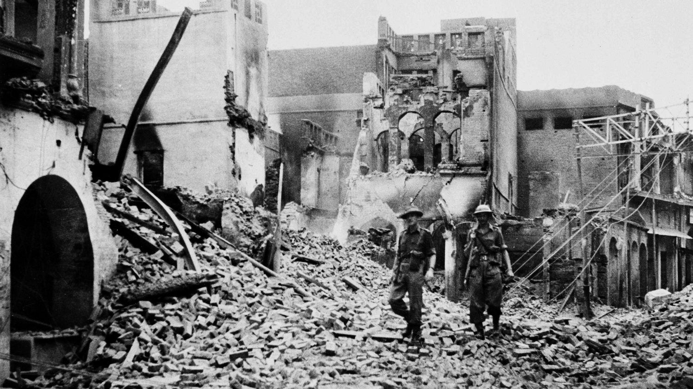
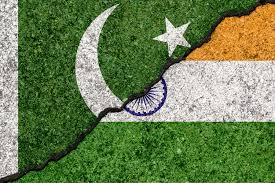

In 1858, Britain colonized India. At the end of WWII, the people of India fought for independence. Some Muslims believed that they would lose rights, so they fought politcally and sometimes phsyically. Later, in 1947, Mountbatten of Britain was tasked with creating Pakistan as India's independence and allowing Muslims to "live freely".

Mountbatten however, was in a rush to grant India it's independence. This led to what you can call harmful disagreements that impacted more than 1 million people.

Today, many historians, civilians, and even Mountbatten have seen the impact that the partition had. It was the result of poor management and early disputes/inequalities.
